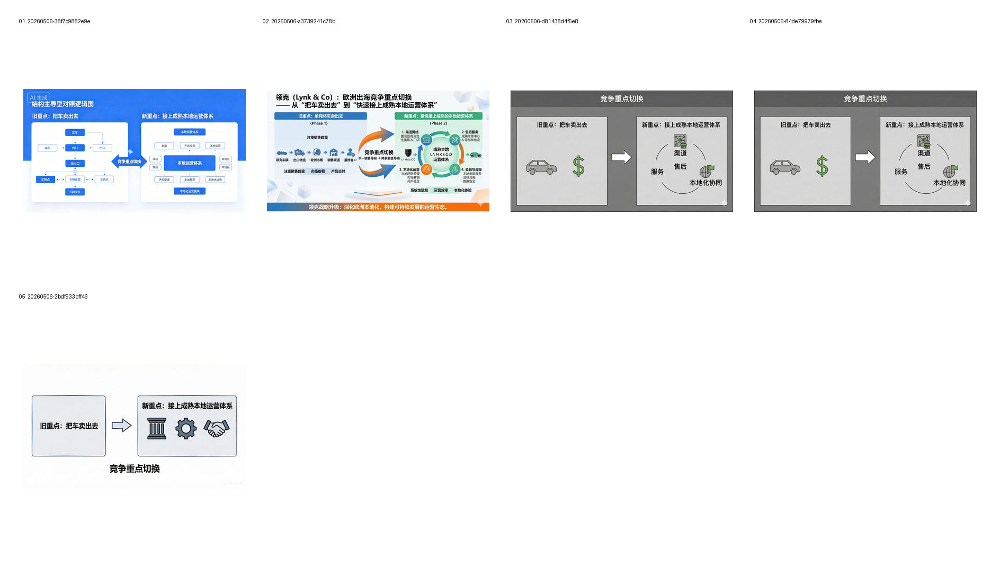
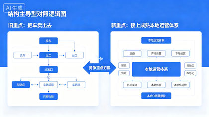
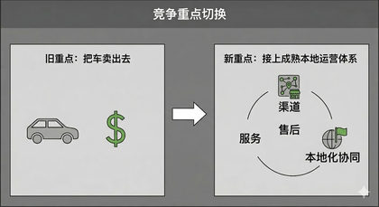
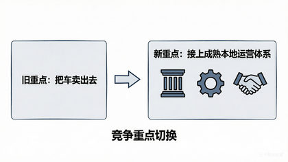

测试竞争重点切换的结构写法、文字白名单和模型增补解释行为。
Evidence: references/text2pic/conversations/20260506-图片风格总结分析/IMAGE_MANIFEST.md § G01 第一轮结构与文字稳定性：竞争重点切换


c32b055c29db82d3…
a3d62539c0081523…
14c09ce47dd0db48…


abc226894729cc71…